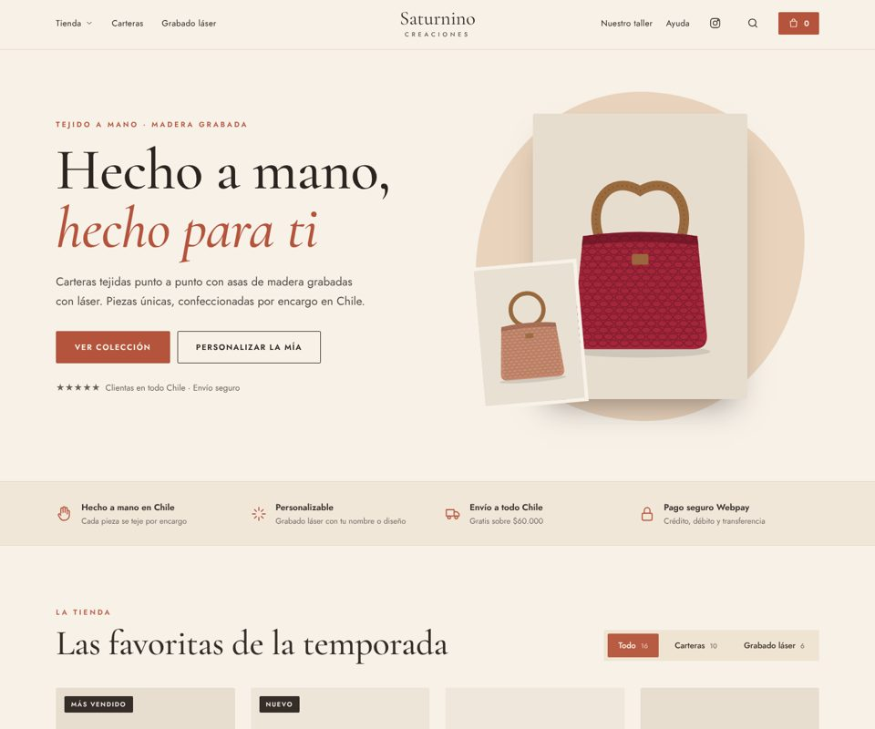
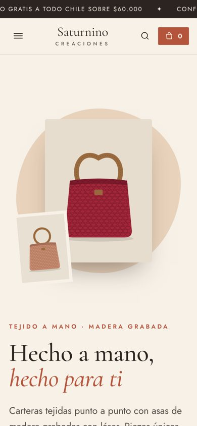
Navegar →01Terracota Artesanal
CálidaCálida y cercana: crema, terracota y madera. Transmite oficio manual y calidez.
8 diseños navegables con las fotos reales de la tienda. Entra a cualquiera y recórrela como si fuera la página final; desde cada una puedes saltar a la siguiente o volver aquí.


Navegar →Cálida y cercana: crema, terracota y madera. Transmite oficio manual y calidez.
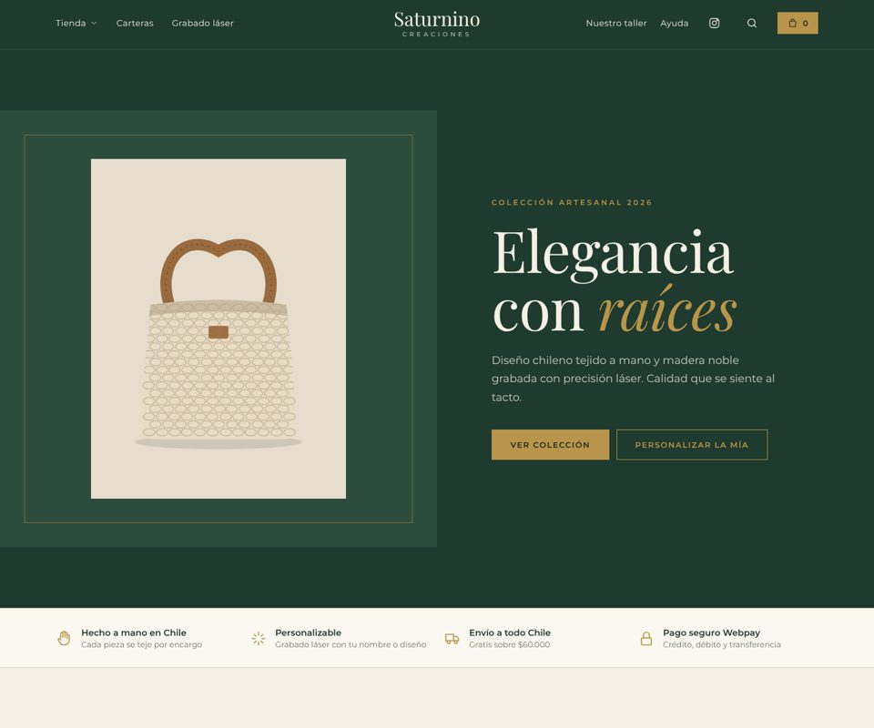
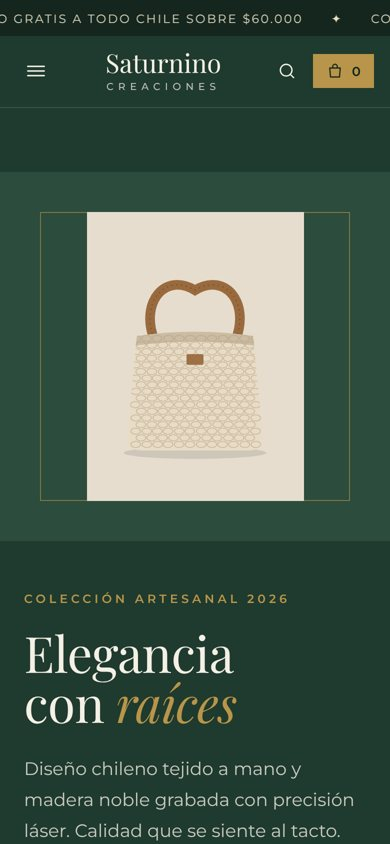
Navegar →Verde profundo con detalles dorados. Inspira confianza y calidad premium.
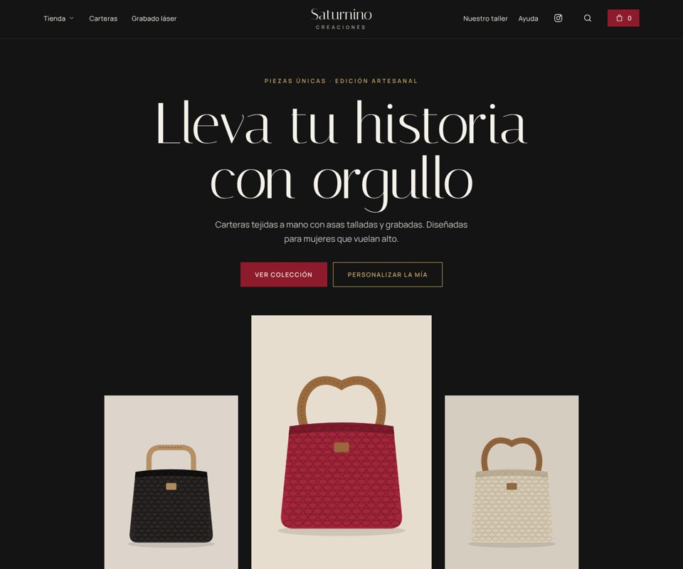
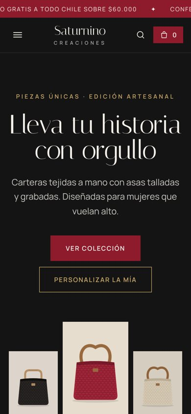
Navegar →Negro, carmesí y champagne. Lujo y exclusividad; destaca la Carmesí.
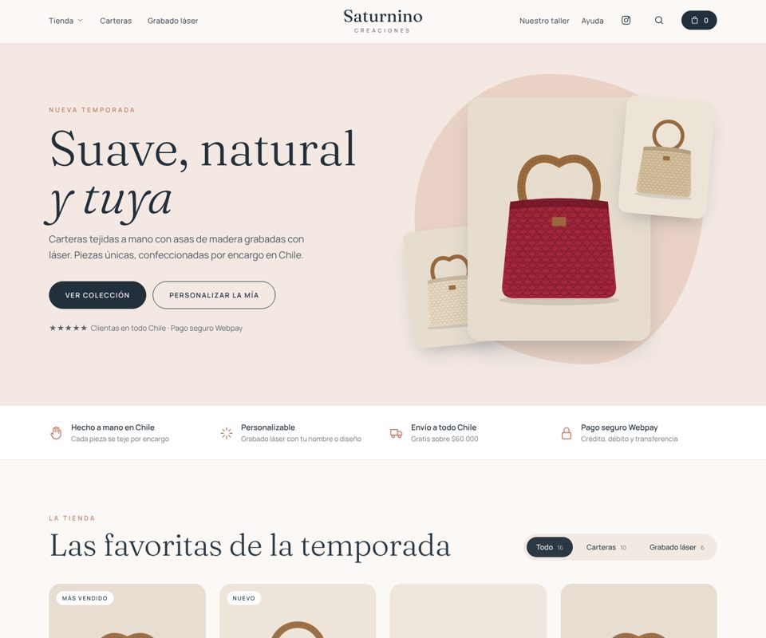
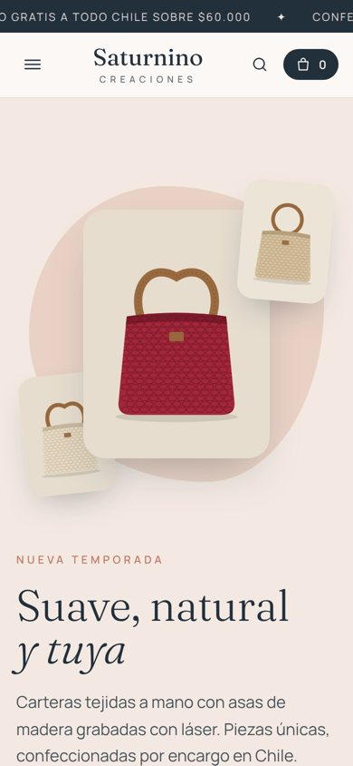
Navegar →Tonos nude con azul petróleo. Femenina, moderna y de confianza.
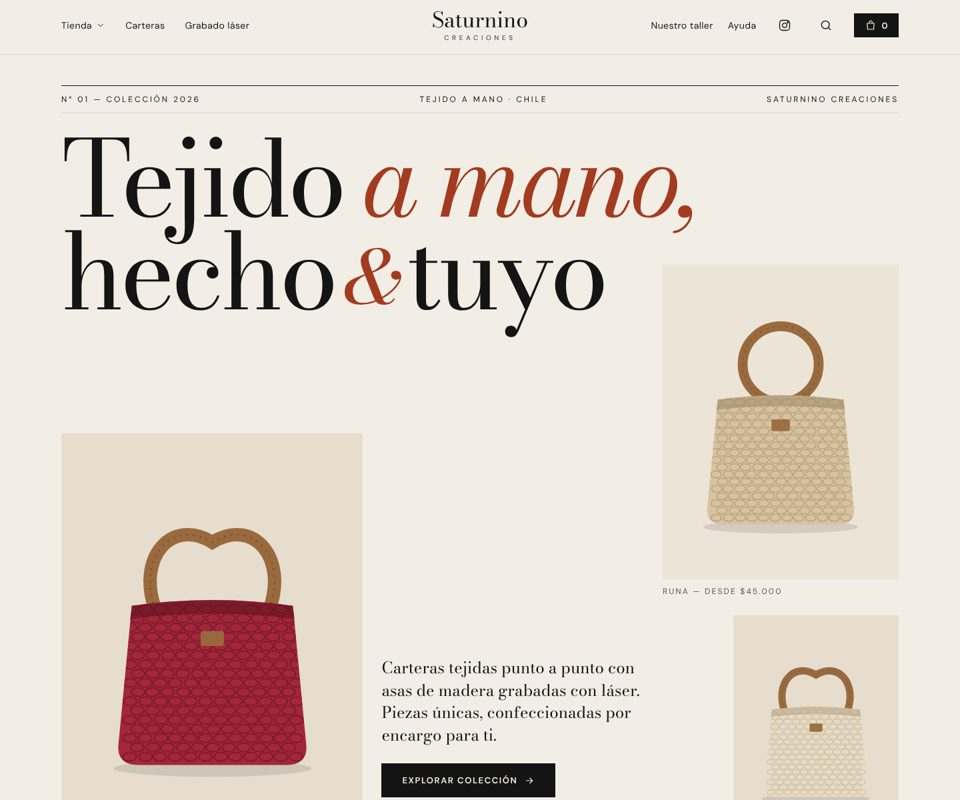
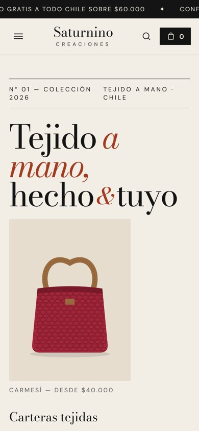
Navegar →Estilo revista de moda: Bodoni gigante y collage asimétrico. Diseño de autor.
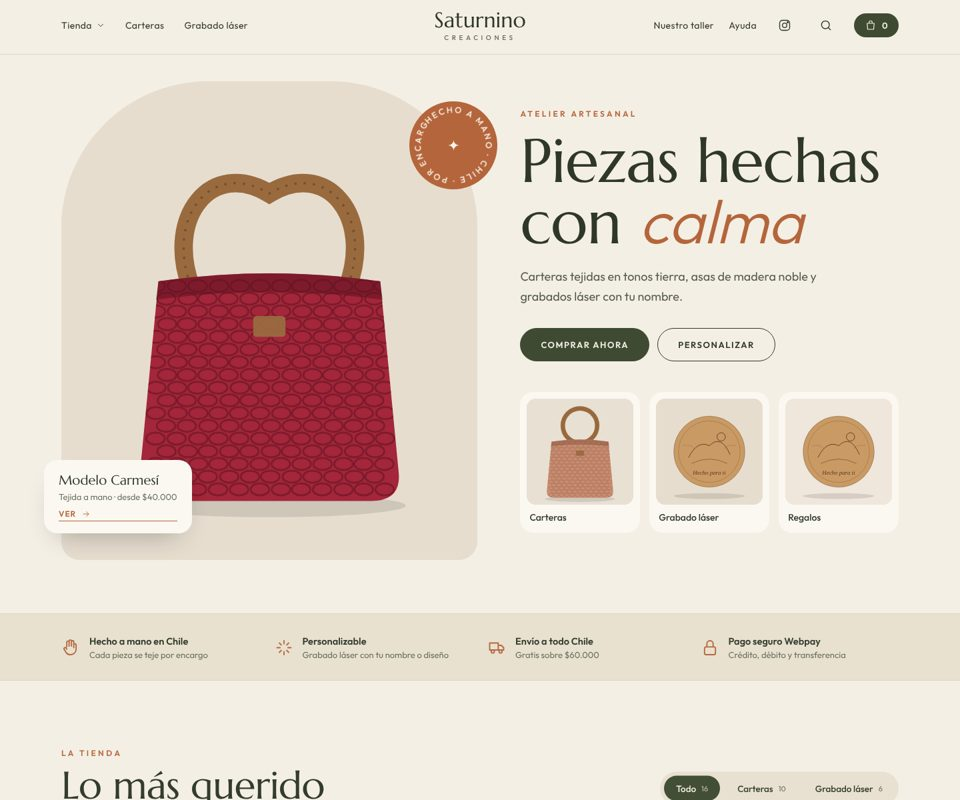
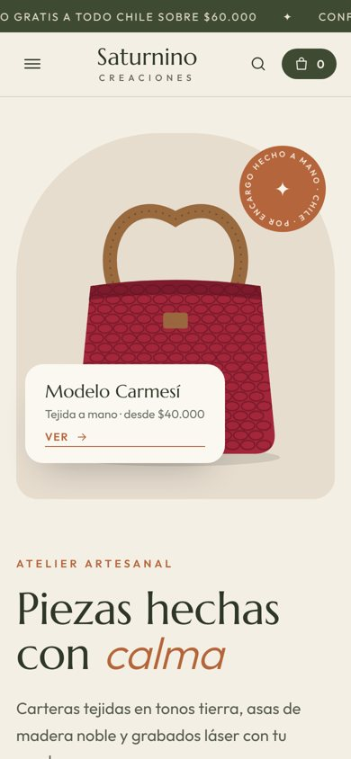
Navegar →Oliva, arena y óxido; fotos en arco y sello giratorio “hecho a mano”.
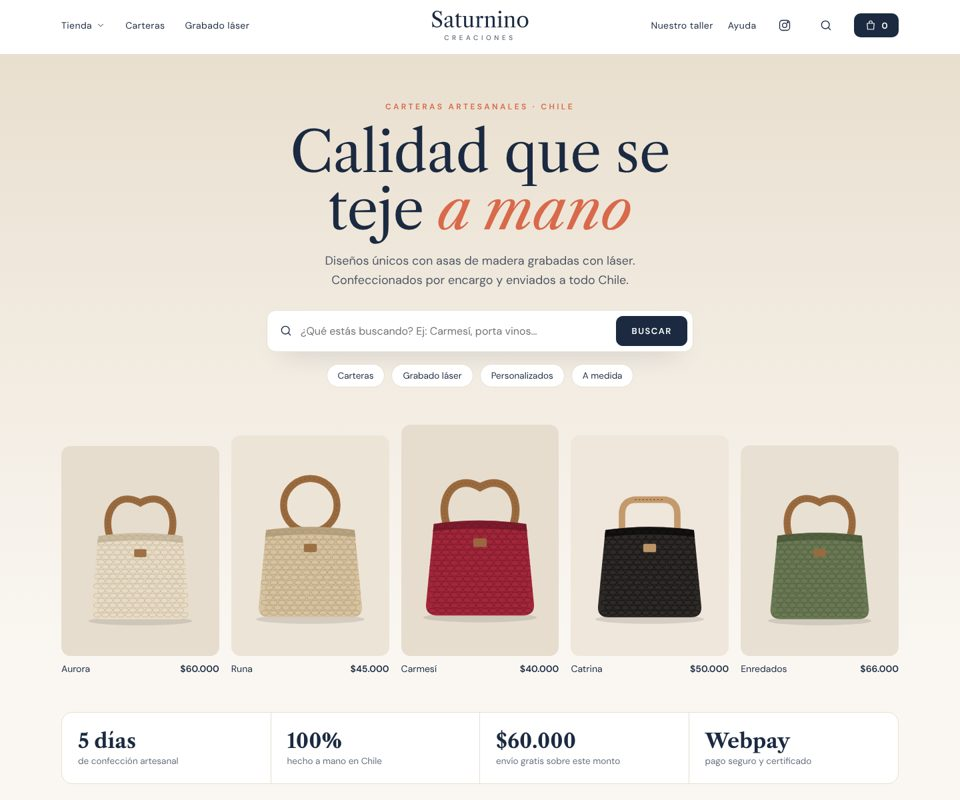
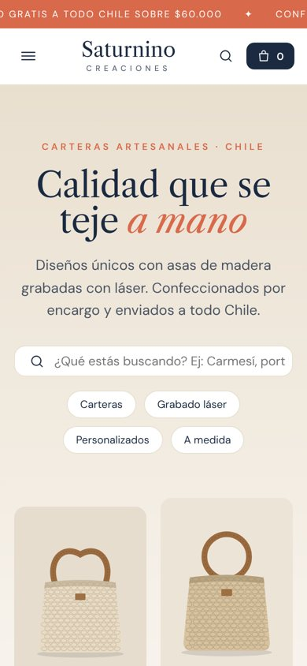
Navegar →Buscador en portada, cifras de confianza y tarjetas tipo tienda grande.
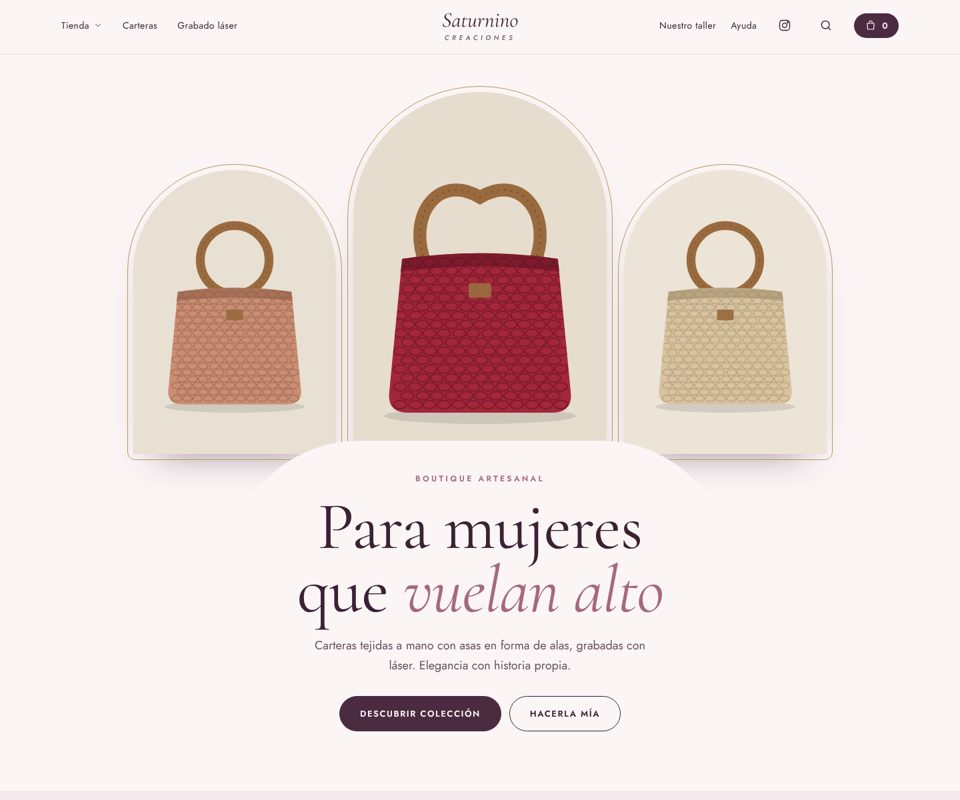
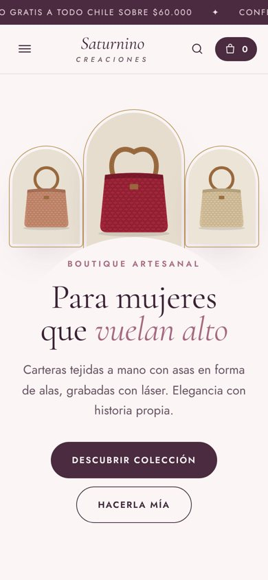
Navegar →Arcos con filo dorado, ciruela y malva. Para mujeres que vuelan alto.